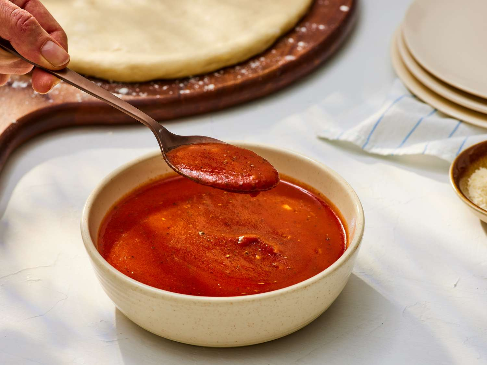

Pizza Sauce
20 minSauce

Ingredients
- 2 Tbsp olive oil
- 1 clove garlic, minced
- 28 oz. can crushed tomatoes 800g
- 6 oz. can tomato paste 170g
- 1/2 Tbsp sugar
- 3/4 tsp salt
- 1 tsp basil
- 1/2 tsp dried oregano
- Freshly cracked pepper
- Pinch crushed red pepper, optional
Description
- Add the olive oil and garlic to a sauce pot and cook over medium heat for 1-2 minutes, or just until the garlic is soft and fragrant.
- Add the crushed tomatoes, tomato paste, sugar, salt, basil, oregano, some freshly cracked pepper (10-15 cranks of a pepper mill), and a pinch of red pepper flakes. Stir to combine.
- Cover the pot, allow the pot to come to a simmer, then reduce the heat to low, and let simmer for 15 minutes minimum, or up to 30 minutes (I often let it simmer as I prepare my pizza dough).
← All recipes